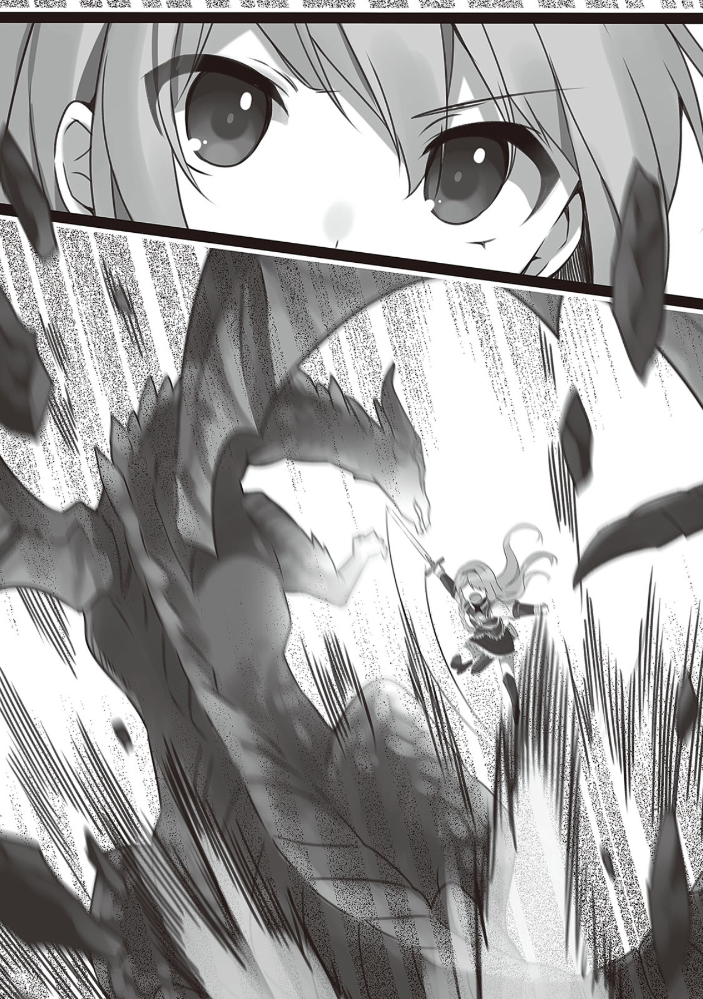
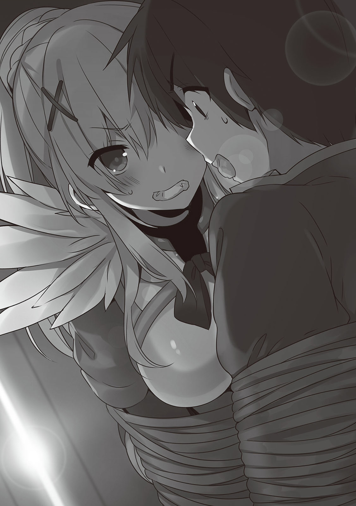

1
龙。
不仅是这个世界，就连在没有龙的地球都无人不知无人不晓的，最具盛名的怪物。
最强，最大，最可怕的象征。
打倒这最强的怪物的人会被称为英雄，报酬也随便挑。
我们现在——
「咿呀啊啊啊啊啊啊啊啊啊啊啊啊啊！咿呀啊啊啊啊啊啊啊啊啊啊啊啊啊啊啊啊啊！咿呀啊啊啊啊啊啊啊啊啊啊啊啊啊啊啊啊啊！」
「你呀呀呀的烦不烦啊！这次的对手太强，所以像你这样的废物也要拿来用了！」
正在讨伐龙的途中。
——将时间回溯到爱丽丝帅气地宣称要讨伐龙的时候。
「要将给这个国家造成最大危害的怪物讨伐掉？那可是最强最大的怪物了！别开玩笑了，我知道你很强，但那是不可能的！」
爱丽丝对吐着唾沫星子大喊的王子不解地歪歪脑袋。
「没成功就没成功呗？我只是自作主张要去讨伐怪物而已，就算死了也不会有任何问题。我会在去讨伐之前写好留言的」
「我不是说这个！虽然很烦你，但你姑且还是跟我说过几句话，要是你死了，我多少会觉得不舒服！所以你别去自杀啊！」
王子面红耳赤地喊着。
这家伙虽然是笨蛋，但似乎本质不那么坏。
「哼，到底有什么好害怕的。确实，要让爱丽丝一个人去面对那么强大的怪物是有些强人所难，但她身边还有我，阿克塞尔第一的大魔法师。来吧，爱丽丝，让我们去收拾掉危害这个国家的所谓怪物吧！」
「你这……！你只是因为不知道那家伙多可怕才这样说的吧！听好了，给国家造成了莫大的危害，还偏偏住在金矿山里威胁着周边的怪物，其实是——」
「等等」
正想回答惠惠的话的王子被宰相插了句嘴。
「里维殿下，随他们去不就好了？毕竟是他们主动要这样的。并且，要是真把矿山里的那个怪物消灭掉，我们也有钱赚。我们当然要阻止杂鱼冒险者或是骑士去贸然刺激它，但爱丽丝殿下是继承了勇者血统的贝尔泽古一族。恐怕不会轻易败下阵来」
宰相看着这边露出了坏笑。到底有什么好笑的。
听罢，王子很不愉快地说了一句。
「……随你们吧！」
把脸转了过去——
「——要讨伐龙是不是太傻了点啊！？喂，笨蛋么！？大家都是笨蛋么！？」
「你别抵抗了，只有这个方法了。而且，我们也差不多该得一个屠龙者的称号了吧？毕竟至今为止都是和魔王军干部以及邪神等周旋的，比起他们龙根本不算什么吧？」
对以赌场为产业的国家来说，或许没什么必要冒着风险去解放被龙占领的金矿。
但是，那是我们得到资金援助的关键，是应该挑战的对手。
「再说，你不是养了一头龙么？事到如今别怕这怕那的，难道泽尔帝长大以后你就要抛弃它么？」
「别把我家聪明的泽尔帝和这种丑陋的蜥蜴相提并论。那孩子很聪明，不会攻击人的。你想想，野生的龙，不就是种智障的蜥蜴么？」
真为龙感到悲哀，居然被这家伙吐槽是智障。
我记得龙族里也有智商很高的吧？
「阿库娅大人，我会保护大家的，所以请你放心帮助我们吧。毕竟对手是龙，没有你的支援魔法或许会很困难——」
爱丽丝恳求道。
阿库娅没有再闹别扭，看来是无法抵抗小孩子的请求——
「……真拿你们没办法。我帮你们就是了，如果公主长大后成为女王的话，一定要让阿库西斯教成为国教哦」
「谁会容许这种混沌的事情发生啊！不把阿库西斯教团剿灭就算给你面子了！」
我和阿库娅在吵吵嚷嚷地时候，爱丽丝突然嘻嘻笑起来。
然后她发现我们的目光都集中到她身上，她就慌忙地甩手——
「啊，请不要误会！我，一直都很憧憬这种像冒险一样的事，现在我们就像是一个冒险小队一样，所以觉得很高兴……」
爱丽丝害羞地低下头。说起来这孩子和我互换身体时也很高兴自己『成为冒险者』。
惠惠对爱丽丝摆出威严的态度。
「虽然是冒险，但这不是闹着玩的哦？你毕竟是被人捧在手里的公主，别太大意了……好吧，这次就有我由人亲自教小弟一些冒险的经验」
「好，请多指教！」
惠惠开始了介绍。两人友好的关系让达克尼斯也不禁露出了微笑。
「……哼，爱丽丝，看这个。树枝折断了对吧？这很可能是某个怪物路过这里造成的」
「不，我的敌感知技能没有任何反应，应该不是的」
在我说出事实真相后，惠惠往这边瞪了一眼。
「爱丽丝，你知道在长时间的冒险中最重要的东西是什么么？对，那就是水。要是遇到什么险情，最需要避免的事态就是『没有水』。所以，必须尽可能地节约自己带着的水……」
「水就交给我们吧。和真和我都会用水魔法，你想喝多少喝多少！」
阿库娅打断了提醒爱丽丝要注意节约水的惠惠，迅速咏唱了水之召唤弄出水来。
给爱丽丝的水杯灌满水后，阿库娅满足地走了。
惠惠一副有话想说的表情跟在她后面，然后，看到了一棵很大的树。
「爱丽丝，你看！这树上的伤痕！我见过这种伤痕，看来这附近有杀人蜂的巢穴，我们要尽可能地小声地……」
「啊，各位来碰我吧。还是发动潜伏技能前进，这样就不用担心被怪物发现了」
「…………」
惠惠嘴角抽动着朝我投以意义复杂的视线后，老实地摸到我身上。
——走了几小时。
「好，毕竟大敌当前，我们先休息一下吧。爱丽丝，我要告诉你在野外休息时的注意事项。首先，不要在有凶爆怪物的栖息地点火，这样会引起怪物的注意……」
「和真和真，快给我点火，我想喝好喝的红茶」
「你居然连红茶都带来了？真拿你没办法，你也要给我喝一杯哦，<点火（Tinder）>」
我用火点燃了阿库娅拿过来的枯树枝和树叶。
「呜哇啊啊啊啊！」
「啊啊啊啊啊啊！喂惠惠你干什么啊，火都被你扑灭了！」
突然挥舞着魔杖把火消灭的惠惠大吼道。
「什么干什么啊！在这种地方生火会引来怪物的不是么！从刚开始讲课到现在你们俩就一直在旁边……」
就在这时。
「敌感知技能发动了，喂，有什么东西过来了！」
一种令人感到不舒服的声音。
看到被吓得一齐飞上天空的鸟儿，才知道那是个不得了的家伙。
篝火被惠惠消灭了的阿库娅喊道。
「都怪惠惠大声嚷嚷！」
「怪我！？对啊，这状况不管怎么看都是我造成的没错！我道歉！但我总觉得好气啊！」
明明还没走到矿山呢。这该说是运气好还是倒霉呢。
那个压垮树林发出巨大轰鸣声的巨大身躯确实配得上『怪物之王』的称号。
我也没去想这么多，大吼了一声。
「突击啊啊啊啊——！」
金色的龙出现了。
2
龙，有着喜欢闪光的物品并有将其收藏起来的习性的巨大生物。如果打倒它就能名利双收。
之所以占领了金矿山是因为被闪闪发光的金子吸引了吧。
龙的杂食是出了名的。恐怕是吃了金矿才会有这样的肤色。
「和真！我们发财了！这是黄金龙，在众多龙种之中收购价格最高的龙！吃了它的肉能连长很多级，血能做稀有的魔药，也是技能升级药的素材。恐怕坚硬的角和鳞都能制作成最高价的宝具，这毫无疑问是座宝山啊！」
一群人被突然出现的龙吓得不知所措，只有达克尼斯一个人兴奋不已地扛着大剑冲了出去。
「爱丽丝殿下！龙就由我来勾引，请在安全的位置进行攻击！毕竟我不是很擅长攻击……！」
达克尼斯喊完这句话，就发动了用来拉仇恨的技能，她现在的帅气表现让人想象不到她平时有多废。
这家伙，要是平常也这样就好了。
「好，惠惠，开始咏唱爆裂魔法。我是很不想让你使用会将贵重的龙炸得粉碎的爆裂魔法，但你要是看爱丽丝有困难就毫不犹豫地放！阿库娅给爱丽丝和达克尼斯施支援魔法！我在远处用弓箭之类的东西攻击」
「我我我我我知道了……！没没没事的，不不不不不就是龙而已，在我的爆裂魔法面前，它它它它不过是只小蜥蜴……！」
「喂你这偷懒的家里蹲，别在后面用弓箭给龙挠痒痒了，稍微派点用场好不好！」
双眼充血地冲向达克尼斯的黄金龙，用与巨大身躯毫不相称的超快速度缩短了距离。
危急关头容易掉链子的惠惠正吓得不知所措。阿库娅虽然嘴上不断抱怨，但还是给我施了提高防御力的支援。
我当然也想派上用场，但是对龙我是一点办法都没有的。
我的攻击无法穿透龙坚硬的鳞片，倒不如说稍微接近一点就被拍死了。
「来吧，黄金龙！就让你见识见识被称为持盾一族的达斯提尼斯家的实力！」
接受了支援魔法的加护，身体散发出微弱光芒的达克尼斯一动不动地等着龙巨大的身躯冲来。
我看着这仿佛童话故事中出现的经典场景似的一幕，突然发现得到了阿库娅提升攻击力的支援的爱丽丝异常安静。
她架着圣剑，闭着眼，一动不动。
突然，我看到她周围开始噼里啪啦地闪着电光，并根据以前看过的众多动画和漫画得出一个结论。
这家伙不得了。
爱丽丝打算使用的技能，恐怕是最强最不得了的那种。
我知道这种玩意儿。
这是在使出浑身解数的最终决战等场景中，类似最后一击的东西。
「嘎嘎啊啊啊啊啊啊，噜噜噜噜呜呜呜呜！」
不知道是不是对毫不动摇的达克尼斯感到害怕，黄金龙发出威吓的吼声但并不攻击。
确实该说这龙很聪明吧，但这一招其实下错了。
一直集中精力搓大招的爱丽丝睁开了紧闭的双眼。
在周围飘散着的能量的碎片不断朝高举的剑上汇集，剑变得越来越耀眼。
我能看到的，只有黄金龙见到爱丽丝后对她感到惊讶而胆怯的一幕——
「<神圣爆发（Sacred·Explode）>！」

随着爱丽丝灌注全力的喊声，金矿山被包裹在了耀眼的光芒中——！
——艾洛德全城沸腾了。
「龙被打倒了！金矿山的黄金龙被贝尔泽鲁库的公主打倒了！」
回到艾洛德的我们来到冒险者工会，报告了打倒了龙一事。
龙是魔力的结晶。
不仅是龙角龙鳞和龙牙，就连每一滴血都全都是高级的素材。
我们只是到工会报告请职员回收龙的尸体就引起了这样的轰动。
龙的尸体大概相当值钱。
但我们想要的资金数额庞大，这种个人赏金根本杯水车薪。
我们走在四处都在歌颂屠龙英雄一片欢声的街道上，前往了王城。
「我已经听说了！没想到你们竟然能打倒黄金龙……！」
曾一度想将爱丽丝拒之门外的门卫看到我们便两眼放光地敬了个礼。
虽说这变脸变得是比翻书还快，但我并不讨厌这样。
「那个，可以稍微向我透露一下，到底是经历了怎样的战斗么……」
我洋洋得意地对有些畏缩地问起来的卫兵说。
「一击解决」
虽然是爱丽丝解决的就是了。
「一击！？一，一击……！」
我们走过目瞪口呆的卫兵面前，前往了谒见之间。
——黄金龙被爱丽丝的必杀技漂亮地一刀两断了。
周围被光包裹，然后回过神来的时候黄金龙就已经死了，所以并不知道那是怎样的技能。
不过……
「爱丽丝，可不要以为那样就赢过我了！我的爆裂魔法也是毫无疑问能够打倒那条龙的！只是因为不能把珍贵的龙轰杀至渣，所以才特意，特——意——把功劳让给了你！」
不仅被抢走了风头，还见识到了强大力量的惠惠从刚才开始就很啰嗦。
「我知道啦，我知道啦惠惠小姐。所以就放过我吧」
「不，不放！什么神圣爆裂啊，那种擅自取了爆裂魔法的上位版一样的名字的技能，今后我可不会再让你用了！」
惠惠似乎对她的必杀技名字很不爽
「不，名字是神圣爆发，和爆裂魔法没有关系……」
「明明是个像山寨版爆裂魔法一样的名字，怎么能说是没有关系！我倒是认为是因为威力很强才被取了类似爆裂魔法的名字！」
「惠惠小姐，你很烦啊！请不要把我们家族代代相传的必杀剑技说成是山寨！说到底那是取自剑名的必杀技……！」
我们放任那两人吵吵着，进入了谒见之间。然后见到了和至今为止态度大不一样的王子——
「真的干掉了么？」
听了我们和龙战斗的经过的王子兴奋得满脸通红，激动地这么问道。
「这是作为证据的黄金龙角。请看」
爱丽丝亮出的背在背上的黄金龙角。谒见之间的所有人都动摇了。
当初看不起我们，把我们当成乡巴佬的那群人不知是不是吃了那条龙很多苦头，还是因为屠龙者的名声确实大到了那种程度，现在他们对爱丽丝投去的都是好意的视线。
怎么样，很厉害吧。
这孩子可是我妹妹。
「闪着金光的角……这毫无疑问是盘踞在金矿山的黄金龙的角……」
听到王子呆然的自言自语，整个谒见之间的动摇更加剧了。
正在这时。
「请稍等」
给包裹在兴奋之中的气氛泼了冷水的，是冷眼看着我们的宰相。
喂，该不会是在这种情况下还要来给我们发难吧。
「真不愧是继承了勇者之血的公主。也难怪代代都让魔王军闻风丧胆……喂！」
听到宰相的信号，一个卫兵拿来了一个大大的皮袋。
……咦，这应该不会是说好的追加支援金吧？
由于我们已经数次打倒了魔王军干部，所以已经基本可以看袋子的大小看出里面的内容有多少。
这的确足以当成打倒高额怪物的报酬，但距一国的支援资金应该还是相去甚远。
「……这是？」
爱丽丝似乎也和我有相同的感想，她一面拘谨地收下那个一面露出了疑惑的表情。
「是本次打倒了龙的讨伐委托的报酬。比起委托冒险者时支付的报酬要多很多。收下无妨」
「怎，怎么能这样！」
宰相刚一说完，在场所有人都骚动了起来。
虽然这里是客场，但骚动的内容却不知为何好像都是在同情我们。
正在这时。
「等，等一下洛古克拉夫特！我觉得那样实在还是太过了……不，不，我明白的。我知道如果给了她们支援资金的话事情会变得很糟糕。虽然理解这一点，但只给屠龙英雄这么一点报酬也……」
我本以为王子很讨厌爱丽丝，但这时开口的竟然是他。
他从刚才开始就用看英雄的目光看着自己本来很讨厌的爱丽丝。
王子也是男孩子。
屠龙者大概也是他憧憬崇拜的对象吧。
但是。
「王子，我想我已经向您说明很多次了。本来停止支援防御费用才是最好的，无法停止支付防御费用也就罢了，进攻的援助资金是万万不可的，和是为国家着想……爱丽丝殿下，我知道你们的情况。但是，我们也是有苦衷的。还请多加理解」
听了宰相的话王子低下了头。
……苦衷？
本来还以为只是在找爱丽丝的麻烦，但莫非是另有原因？
王子埋着头一会后，战战兢兢地窥探起了爱丽丝的脸色。
「那个……抱歉。我们也有很多不能给你们资金援助的苦衷。请多多见谅」
王子一改至今为止的傲慢态度，深深低下头道了歉。
见他这么做，先不说我，至少爱丽丝和达克尼斯是没办法再说什么了吧。
「怎么会……」
如我所料，爱丽丝陷入了消沉。
不知道是不是受到的冲击太大，她无意识地抓紧了我的衣服，呆然地一动不动了。
王子见状，不知是不是觉得有些愧疚。
「那个，怎么说……对了，你们去过赌场了么？看你们都挺刻板的，恐怕是还没有去过我国引以为豪的赌场吧？至少去赌场散散心吧！」
说出了这样其实也不太像是在安慰她的话……
…………
「那个，王子。能说两句么？」
「嗯，什么？现在还是先安慰一下你妹妹……」
我在清楚不合时宜的情况下还是向王子开了口。
「不，我是想找你说下赌场的事。反正都要玩我还是想玩个开心再回去。你能给我个那种能一掷千金的大赌场的自由通行证么？」
「……你妹妹还在消沉呢，你是认真的么？不，说让你去赌场散心的也是我，就随你便吧。，我先跟你说清楚，跟我打赌那时的小花招可不管用哦？这个国家的赌场可没那么好对付，毕竟整个国家可是靠赌场起家的。我是不会拦你……」
王子话还没说完。
我就为了藏住嘴角的笑容而殷勤地低下了头。
——从王城回去的路上。
「……我太不中用了。本来以为自己很努力了但还是没能做到……明明兄长大人和各位都帮了忙。明明都和大家说好了的……」
走在最后边的爱丽丝失落地低语道。
达克尼斯打算开口安慰她——
「和真和真。这种时候，你作为哥哥不该做些什么吗？我也不想看到我的小弟这么消沉」
这家伙又是到底把我当成什么了。
真希望我周围这些家伙改改一有事就依靠我的坏习惯。
然而到现在还没能理解这一连串事情发展的阿库娅还哼着小曲走在前面。
我回头。
「喂，爱丽丝」
对一个人跟在后面的爱丽丝这么一喊，爱丽丝便颤了一下缩起了身子。
或许是以为自己搞砸了惹我生气了，她握紧拳头低下了头。
「爱丽丝你很努力了。嗯，毕竟是屠龙者啊。毫无疑问是英雄，没人能做出更大的努力了。谁都没有资格来责备取得这样的成果的你」
达克尼斯闻言点了好几次头表示同意。
「没错爱丽丝殿下！就像和真说的那样，爱丽丝殿下已经足够努力了！等回到王城之后，就由我拉拉蒂娜来宣传爱丽丝是如何奋斗的……！」
「所以，爱丽丝」
我打断了想要鼓励爱丽丝的达克尼斯。
然后把手放到了爱丽丝头上。
「接下来就交给哥哥我吧」
这么说着，对她露出了笑容——
「你看惠惠，那就是摸头杀和傻笑杀。那个男人正打算使用仅是摸摸头露出笑容就能让女孩子迷上自己的传说技能」
虽然的确是有点这个意图，但希望她好歹看下气氛。
3
接下来就交给哥哥我吧。
我在这么对爱丽丝说完后，还说了这么一句话。
——我有个好主意。
「你这家伙……夸那么大的海口，还害我期待一番，结果就是这样的么！」
答案非常简单。
没错，就是赌场。
靠着我与生俱来的好运气，去赌场赌博赚钱。
虽然达克尼斯对我这种连作战都称不上的，寄希望于不确定性的行为感到愤慨，但我也没有其他办法了
「虽然话是这么说，但是达克尼斯，我认觉得这个方案的成功率并不算低」
「哪里不低了！需要钱的时候靠赌博来赚钱这种想法是最不可取的！十分抱歉爱丽丝殿下，我就不该相信这个男人……！」
但是，爱丽丝对出言失礼的达克尼斯摇了摇头。
「不，拉拉缇娜，我认为这个不错的想法」
「爱，爱丽丝殿下！？」
听到意料之外的答复，达克尼斯陷入了混乱。
「爱丽丝殿下，请三思。爱丽丝殿下拼上性命打倒黄金龙得来的赏金和素材收益和艾洛德的追加资金加起来或许是和目标相去甚远，但比起最初那种迫在眉睫的状况还是……！」
达克尼斯强调起爱丽丝的功绩，想要让她改变想法。
爱丽丝温柔地牵起达克尼斯的手说道——
「拉拉蒂娜，以前阿库西斯教团的大司祭阿库娅大人曾这样说过。『反正都要失败不如放手去做，失败之后跑路就好了』」
「爱丽丝殿下，那是错误的思想！不可以被阿库娅教污染！」
我拉住喋喋不休的达克尼斯的肩膀把她拉了开来。
「爱丽丝你可不要变成这种死脑筋的女人啊。看，这里就是赌场。赌场是个用来享受的地方
你说什么！死脑筋的女人是什么意思！」
我不去理会还在啰嗦的达克尼斯，从爱丽丝手中接过支援资金交给了对金额感到目瞪口呆的管理人，换取了大量的筹码。
首先有必要让这坨烦人的达克尼斯闭嘴。
没问题，毕竟我和真正的幸运女神是朋友。
我坐到轮盘前，用两手捧起堆积如山的筹码的三分之一左右。
周围的人和达克尼斯都显得一脸诧异，唯有爱丽丝一脸严肃地关注着胜负。
我想着为了爱丽丝这样一个好妹妹一定得赢下来，脑中便浮现出了意外喜欢与人较量的，说不定现在也在什么地方注视着我的老大开朗的面容。
「爱丽丝我再说一次，较量是用来享受的。还有，这种时候应该这么说。这是我一个运气比我还好的朋友的口头禅」
我把手中的筹码全都押到了红方。
然后祈求着那位爱恶作剧的女神大人能借我一点力量，以足以传达到天际的响亮声音说了出来。
「试试看吧！」
——整个赌场的客人都聚集到了轮盘周围，形成了厚厚的人墙。
「啊哈哈哈哈哈！赢了！又赢了！和真你这运气真的是好得没边啊！仅限在赌场里我愿意一生跟随和真老大！」
「喂，你不要来押我下注的那边啊。运气跑掉了你可赔不起」
大获全胜。
虽然往轮盘里放珠子的操作员已经要哭出来了，但我们必要就此收手。
我对完全安静下来，显得特别老实的达克尼斯说道——
「喂，再给我倒杯咖啡来」
「好，好的，立刻照办！」
从刚才开始她就一直在给我倒提神用的咖啡。
达克尼斯在我第一次赌对了的时候长舒了口气。
在我第二次又赌对了之后，她小声叹了口气露出了苦笑。
「给你拿来了！不，给您端来了！请用咖啡！」
「辛苦了」
在我赌对第三次的时候她发出了惊叹声。
然后在第四，第五次的时候她就有点不淡定了。
「那个，客人……」
到赌对了地七，八局的时候，眼前的操作员都对我投来了敬畏的目光。
「嗯？怎么？可不能说『不能再赌了』咯。毕竟在客人一败涂地的时候你们也不会劝他别再赌了对吧？」
我把装满了篮子的超大量筹码一口气取了出来。
「差不多该来玩点劲爆的了。我记得，不仅押对颜色，还押对了号码的话倍率是很高的吧」
「客人！请，请不要再……！」
从刚才开始就从远处看着这边的，像是管理人员的男人面色铁青地跑了过来。
要是这里是私人经营的赌场的话我倒是会有点过意不去，但很不巧这里是国营的赌场。
不管再怎么榨取，哭的都只是那个王子和宰相，所以没有问题。
我故作姿态地在他面前喝着达克尼斯给我端来的咖啡，并从胸口拿出了两个吊坠。
「喂，你知道这是什么吗？」
「……？……那，那是！？邻国的大贵族，达斯提尼斯家和希佛尼亚家的纹章！？」
理解了其中意义的管理人脸色更加难看了。
「没错，我背后就是那些大贵族。你知道这是什么意思吧？要是你说不能再来了，那说不定会变成外交问题」
「呜……！」
管理人咬着牙，瞪着我走开了。
哼，赢定了。
「兄长大人好厉害！虽然听说过你好运超常，但没想到竟然如此好！有这么好的运气，不用当冒险者在赌场积累财富不就好了么？」
从刚才开始就一脸兴奋的爱丽丝紧握着两手对我说。
成为赌徒以此为生。
虽然不是没有过那种想法，但像我这种容易被卷进事件里，能力又弱的冒险者在赌场赢得盆满钵满的话，毫无疑问是会被人盯上性命。
而且这种事只有偶尔做一下才会那么顺利。
顺着欲望一直持续下去一般是没什么好事的。
现在我能这么做，一是因为有公主和两名大贵族做我的后盾，二是因为有要筹集与魔王军作战的资金这样的大义名分。
不然的话，要是被厄里斯大人发现，她大概马上就会来阻止我。
「不，我并不想做赌手。为了打倒魔王，我还是想做一个冒险者」
爱丽丝对耍着帅的我投来的尊敬的目光。
我把装满了筹码的篮子全押到了黑色六号上，周围的围观群众都骚动了起来。
「好了，来一较高下吧！」
被我的气势压倒的操作员流着冷汗拿起了珠子……！
「我也放在这！」
「啊」
我还来不及阻止，阿库娅就把筹码放在了同样的地方。
于此同时珠子被扔了出来，在轮盘中转了起来。
「你！我不是说了你不要来掺和的么，这可不是闹着玩的！」
「为什么我就不能赌啊小气家里蹲！最近我都一直在输，稍微让我赚回来一点也……」
在我训斥阿库娅的同时，珠子的速度慢了下来……
「红色五号」
「看你干的好事啊啊啊啊啊啊啊啊啊啊啊！」
「哇啊啊啊啊啊！我的零花钱全没了！}
我把达克尼斯叫过来指示她把阿库娅拖走。
「我说达克尼斯，求你了！不在这里赚一笔的话我就没钱给泽尔帝买礼物了！借我点钱，我赢了就还你！」
「礼物我给你买你给我过来！这可是赌上了我们国家的未来的！」
看着阿库娅被拖走，我调整好了心情。
瘟神走了运势应该会重新回到我身边的。
「和真，为了把输掉的钱全都赢回来！我们需要赌一脚大的！快把剩下的筹码全都赌上！」
「赌你妹，我和你不同，是慎重派！啊，别想偷偷把筹码放上去！达克尼斯，把这货也拖走！」
继阿库娅之后惠惠也被达克尼斯拖走，我押了黑色的八号。
——那天晚上。
「和真先生和真先生。今天你非常帅气啊。那个，我从以前开始就很想对你说……」
「你怎么夸我我都不会给你零花钱的。给你钱你就会来搅我的局……哦，来了来了」
在大获全胜的我们回旅馆的途中——应该说是意料之中吧。
「喂前面几个，借一步说话吧？」
蒙着面的男人们堵在了我们面前。
爱丽丝看着那些男人对我投来了尊敬的目光。
「兄长大人好厉害，竟然连这一步都想到了！」
「你看？我说的没错吧，肯定有人在路上堵我们的。这些家伙是赌场雇的人」
听了我的话男人们慌忙摇头道。
「不，不是！我们是听说你赚了大钱的强盗！老老实实把赚的钱留下就好，不然的话就得让你尝点苦头了。不用担心，不会要你命……」
我无视说着些什么的男人，拿起来捆人用的绳子。
「你们听好了，要抓住这些家伙用识破谎言的魔道具好好审问一番！要是这些家伙背后是国营赌场，就能把事情搞大强行要求支援资金了！」
听了我的话，不止是眼前的男人们，不知为何就连我的同伴们都蒙了。
「和，和真，所以你才说回旅馆要走阴暗的小道么？所以才让阿库娅给你上支援魔法，所以才全副武装地去赌场么……」
听到达克尼斯的低语，男人们向后退缩，交头接耳起来。
「喂，好像有点不妙啊？总感觉是我们被套进去了」
「话说，那边那个不是红魔族么？而且还有两个金发碧眼的。那就是说……」
「喂，有贵族！贵族都很厉害的啊！」
哎呦，不好。
「看起来他们想跑啊。那些家伙可是我们的摇钱树，别让他们跑了！不用手下留情，反正万一出事还有阿库娅的复活魔法！」
我这么喊着朝向男人们……！
「快跑！那家伙不妙，还说什么『有复活魔法』！他们认真的，是要动真格的！」
「绝对别被抓住了，跑起来！」
「等等我，别丢下我！}
看来果然是被雇来的，男人们四散而逃。
「……我说和真，说复活魔法就太过火了吧」
「不，不是的，我是觉得那样说对方就会怕了！真的，我哪来的那么大胆子……干嘛啊，都用那种眼神看我，真的！」
被孤立我拼命解释着。
4
在那之后我们每天都去赌场。
「来了啊！」
管理人一看见我就面色煞白。
——最开始他大概没想到我会连胜这么久吧。
我每次来到赌场，管理者都只是一副愤恨的表情在远处观看。
但是，看到我每天带回去的钱都在增加，他似乎终于注意到了这样下去会大事不好。
「客人？那个，客人您太厉害了要是您再来的话我们店会倒闭的。我们会给您一些礼金，还请您……」
「这里是国营的赌场吧？那怎么可能倒闭。就算亏损也没问题，说到底，叫我来赌场散心的可是你们国家的王子。你看，这是你们王子给我的VIP卡」
「王，王子说的！？怎，怎么可能……」
我没去管惊愕的管理者，今天也豪迈地下了注。
——那之后又过了几天。
赌金滚起了雪球，感觉追加支援资金也很现实了。
「客客客，客人。那个，其实我们赌场明天开始要休业了。所以，那个。因为客人您是常客所以想着还是特地通知您一声……」
「哦，这样啊。无所谓，我们在赚到目标额之前在这里住个几年也无所谓的，等就是了。但要是赌场关门那么久的话，这个国家的收入没问题么？」
「几，几年……」
为了让我们离开还通知我们要休业。
「——客人，求您了！还请高抬贵手！我每天都被上面的人训斥，求您了请高抬贵手！」
在管理者总算是真的哭出了出来的时候。
王城派来的使者来到了依旧大早就打算前往赌场的我们面前。
——被使者带到王城的我们立刻就被带到了谒见之间。
「求你们回去吧」
王子一看到我们就低下头这么说道。
感觉在这么短的一段时间内他憔悴了许多，不知是不是我的错觉。
「喂喂，不是你让爱丽丝去赌场散心的么。我们只是在散心而已。散好了自然就回去了」
「等等，你们再赢下去就真不是开玩笑的了！这样下去会被当成我国给了追加支援资金的！」
就算这么说。
「自称赌场大国却要赶走在赌场大胜的客人么。这事要怎么交代啊？我们只是在你们国家的赌场玩而已，这有什么问题么？」
「呜……那是。我们国家也有苦衷……」
就只之前说的那个么。
那种事当然和我们无关。
「那个，苦衷是指什么呢？是无论如何都不能告诉我们的事么？」
这时，爱丽丝走上前对王子问道。
王子一瞬间露出有些迷茫的表情，然后一副抱歉的表情说。
「不，这事实在是……」
但王子说到这里，话就被打断了。
「我们国家在与魔王军做交易」
宰相一脸平淡地说出这种了不得的话。
在场的所有人似乎都知道这件事，他们并没有对此感到惊讶。
「洛古克拉夫特，你……！」
王子慌忙地举起手来想要阻止宰相继续说，但宰相没有停下。
「我国正在与魔王军进行和平交涉。魔王军承诺如果战胜了贵国，也不会进犯我国。条件是，我国不能进一步支援正在与魔王军交战的贵国」
达克尼斯咬牙切齿地对平淡地陈述事实的宰相厚道。
「你这混蛋，居然倒戈向魔王军！作为一个人类你就不感到羞耻么！」
达克尼斯异常地愤怒。
「但是，事实上贝尔泽古还不能战胜魔王军。魔王军和贵国陷入了胶着状态，谁赢都还不好说。如果有协议只要保持中立就不把我国卷进战火的话，对国家领袖而言，这并不是一个坏的选择」
宰相毫无诚意地皱眉解释着。
我也不想和魔王什么的扯上关系，也不是不理解他的心情。
但我现在是作为爱丽丝的哥哥来的。
在我纠结着该如何完美收场的时候，达克尼斯高声喊道。
「居然信任魔王……！听好了？魔王可是喜欢将女人——哪怕是幼女掳走，尽情侵犯的邪恶存在！拐走公主，拐走女骑士，对她们进行各种变态的凌辱。这才是魔王！」
「这，这也太失礼了！啊不，你到底是从哪听来这种传言的。其实这次的交涉是由我负责的，从对话的感觉上来看，魔王大人是个非常弱气而值得信赖的魔族……」
宰相开始帮魔王说话。值得信赖的魔族这句话本身就很可疑。
但是。
「就算你这么说啊……这传言还是很有名的呀……还有很多比如魔王是萝莉控，魔王是喜欢过激Play的大陆第一变态，魔王是基佬等等各种传闻……」
「到底是谁传出这种不负责任的传闻的！」
宰相不知为何显得很激动，而这边的阿库娅也不知为何摆出一副得意的表情——
「这是我们阿库西斯教团造的谣！我家孩子们将我脑补的魔王的情况四处传开了」
「喂，魔王军之所以会攻过来该不会真的是因为你们这帮人吧」
听说是阿库西斯教徒干的好事后，宰相双手抱头蹲了下来。
自己信用的人被说成这样，想必是很接受不来吧。
也能理解他想为作为交涉对象的魔王说话的心情……
就在这时。
「那个，里维王子？情况我大概了解了。魔王军是说，如果贝尔泽古被打败后就攻击艾洛德，要是不想这种事情发生就和魔王军联手，对吧？如果这是王子殿下经过考虑后，为国家的存亡而做出的选择的话，我不会有任何意见」
一如既往的很会照顾别人感受的温柔小公主，选择了不太伤人的说法——
「所以请放心，我会向父王报告，保证今后两国的关系不会恶化……我对自己看人的眼光还是很自信的。第一次见面时我就明白王子并不讨厌我。这不是自大，只是冥冥中能感受到」
然后对因为刚才的话低下头的王子说。
「贝尔泽古的王族很强。就算没有贵国的支援也不会输给魔王军。所以……」
用像是安慰受伤小孩的温柔声音说……
「请不要露出这么伤心的表情」
她笑得很纯洁。
「……我似乎被自己国家的人称为笨蛋王子」
坐在谒见厅的宝座上的王子突然抬起头来。
他怎么突然说这个。
「说我不关心政治，每天只沉溺于赌博」
面对有些度不清话题走向的爱丽丝，王子总算是露出了与年龄相符的笑容。
「要不和我再赌一次吧？这次就不要出千了。如果你们还能赢我的话……我就，赌贝尔泽古会打倒魔王！」
「王，王子殿下！？」
宰相发出了惊叫。而我掏出硬币给王子看。然后把双手藏在了背后。
最后将双拳深处。
「——来吧，硬币在哪边？」
5
这一天晚上。
在睡觉还太早，但做其他事又显得有点晚的微妙时刻。
这次赌局的结果当然是以我们的胜利告终。
宰相一个人不高兴地嚷嚷着，但王子周围的臣下都意外地露出了满足的表情。
实际上他们心里还是对自己的主子能自主做出判断感到高兴吧。
恐怕今后不会有人再叫他笨蛋王子了。
——结果，为与魔王军战斗的防御支援费用恢复到原本的水平。
并且，还得到了大量资金支援对魔王军的攻势。
而且爱丽丝还得到了屠龙者的称号，可以说这次的首脑会面是非常成功的。
……但是，有件事很让我在意。
那就是王子似乎很中意爱丽丝。
一开始是为了和爱丽丝的国家保持距离，对爱丽丝的态度才会那么糟。在资金援助的问题解决后，他还郑重其事地开了宴会款待她，宴会上他们两个交谈甚欢。
对，连两人的关系都被改善了。
我想起了我当初的目的。
我会跟来这儿只是为了不让爱丽丝被某个不知名的野男人抢走。
来到这里后发现王子在主动回避我们，所以安心了不少。但现在的情况不得不让我回想起自己的使命。
「到底要怎么办。难不成要在爱丽丝面前用偷窃技能把那小鬼的下半身扒光么？……不，让爱丽丝看到奇怪的东西会影响她未来的成长。但那家伙姑且是王子，不能做的太过火……」
宰相请我们今晚留宿在王城，我们也照搬了。现在我正躺在自己被分配到的房间的床上嘀嘀咕咕着。
这时门被轻声敲响，外面传来了搭话声。
「和真，你在么？我有话想跟你说，能让我进来么？」
外面听到了惠惠的声音。
因为我还没想要睡觉，所以门也没锁。
「门开着呢」
对门外喊了一句。
「不好意思这么晚打扰你……」
惠惠红着脸进来了。
她到底有何贵干。
难道是为爱丽丝的事过来感谢我的？
没错，这家伙和爱丽丝好像在偷偷着干些什么。
干脆趁着机会问清楚吧。
……正当我这样想的时候。
「那个，能坐到你身边么」
说着，没等我回话就坐到了我身边。
这家伙怎么回事，今天怎么对我那么亲切。
……我突然想到。
对，想到了之前的事。
我之前是怎么跟她说的来着？
应该是这样——
『……那啥，如果你有哪天抛下了那个大姐姐的心灵包袱，想纯粹地和我干那种事的话，我倒是没有任何拒绝你的理由』
而惠惠好像是这么回答的。
『是么，如果那一天真的来到，我会再到你房间玩的』
心跳一下子就加快了的我尽力佯装冷静。
「请，请吧。今晚到底是吹的什么风？难道是睡不着想找我玩游戏吗？那你还是找和你实力相近的爱丽丝去玩吧」
惠惠打断我的话，猛地把脸凑近了。
不知是不是在兴奋，她的眼睛闪着猩红的光芒。有一种严肃而真挚的气场。
我不禁吞了口唾沫。
「今晚和我一起睡吧。那个……不行……吗……？」
她一边小声说着，一边紧紧握住我的手，害羞地把头转向别处。
这一天终于来到了。
没有任何套路的，胜利的日子总算是来到了。
但是要冷静，首先要锁门，防止任何人进来。
然后沉稳地，作为一个年长男性好好引导她。
我抓住惠惠的双肩，然后松开，打算走去锁门……
「那个，和真，我，呃……没有达克尼斯那么大，果然还是……不和你的口味吧……？」
「才没那回事。我是平等地爱着贫乳与巨乳的男人。请你不要认为我是那种肤浅的男人」
惠惠对我莫名激动的回答感到有些害怕。
「是，是是么，那就……那个，因为很害羞，所以能不能请你闭上眼？」
「我拒绝」
「那，那我该怎么办啊……房间也这么亮……求你了，就闭一下下……」
面对我的秒答，她不知所措。
没办法，我还是老实地闭上眼睛吧。
但至少还是锁个门吧。
否则某个像是看准时机了一样过来搅局的家伙就会……
在我一边怀着担忧一边怀着期待闭上眼的瞬间……
——我失去了意识。
「……么……但是，你……」
「……不，达克……我……你……」
听到一男一女正在对花。
我一边模糊地听着两人的说话声，一边回想发生了什么……
「！？」
完全清醒过来的我发现自己被戴上了口球。
不仅是这样，手也被手铐铐住，全身被缠满了绳子，动都动不了。
因为不管怎么挣扎都没法拜托，我就用夜视技能看了看，发现自己应该是被关在衣柜里。
……怎么又是这样啊啊啊啊啊啊啊啊啊啊啊啊啊啊！
正当我在狭窄的空间中抱怨老天爷的不公时，又听到了声音。
「但，但是和真，我和你身份差距太大，并不是那么轻易就……不，当然，我并不讨厌你！我只是想说现在做这种事是不是还太早了……」
是达克尼斯的声音。
这家伙在说什么胡话呢。
这一刻，衣柜外的另外一个声音让我懵逼了。
「身份和地位的差距又算得了什么。我发誓不惜舍弃自己的身份只爱达克尼斯一个人，所以拜托了，就这样和我……！」
是我的声音。
「舍弃身份？身为平民的你到底还有什么身份可舍弃啊？」
「啊？咦？」
某人听到达克尼斯问题，发出了不解的声音。那正是我的声音。
「倒不如说，你今天的状况好奇怪。最令我不爽的就是明明与我两人独处还显得那么镇静」
这女人。
真想现在就冲出去扇她两巴掌。
你哪来的那种自信。我也不会一直都那么窝囊……！
……我现在可不会对这种事一惊一乍，嗯……
「不，不啊，要和达克尼斯两人独处我还是很紧张的？你看，我真挚的眼神……」
我的声音再度响起。
但是在这句话说完之前。
「……喂，为什么你的视线一直没有移向我的胸部？在这种情况下眼神还这么真挚……你，绝对是冒牌货吧！」
「咕！」
在衣柜里听取状况的我在纠结着之后该如何教训她。
虽然不清楚具体是什么状况，但现在外面应该有一个我的假货在用我的声音说话。
是该对她能看穿那人不是我而感到高兴呢，还是为她对我说的那些过分的话感到愤怒呢。
「既然暴露了那就没办法了，哪怕使用蛮力我也要让你屈服！这房间是那男人的房间，想必你已经发现他不在了吧？如果你敢抵抗，我就把他……！」
不好，状况糟糕了！
那个高洁而为同伴着想的达克尼斯听到这话一定会……！
「什……！你这混蛋居然拿人质来当挡箭牌，太卑鄙了！你，你到底想用这个手铐和绳子对我做什么！？SM吗！？给我铐上手铐，然后捆绑我，对我进行那样的事！」
「不，哪样都不会。只是把你捆起来而已……怎，怎么，异常老实啊……」
「咕，我变成怎样都无所谓，但是别对我的同伴出手！啊啊，手铐好冰……！喂你，能不能用你现在的声音，用稍微鬼畜变态一点的语气说『嘿嘿，真欠调教啊达克尼斯！你应该知道接下来会发生什么吧啊？』」
对，这种状况对那个超级变态来说简直是求之不得。
「嘿嘿，真……不，不不不，够了！喂，我要捆你了，别乱动。喂，我不会对你做什么奇怪的事的你不要脸红好不好！」
「毕竟你是盯着这张脸……！喂，你要把我怎么样！难道是想把我关进狭窄阴暗的衣柜，然后对我……！」
感觉声音渐渐朝这边接近，结果眼前的衣柜门打开了。
我和达克尼斯对视了好几秒。
「……你一直听着么」
我点点头。
——被塞了口球，害羞地红着脸的达克尼斯和我一起被塞入了衣柜。我们看着眼前的帅哥——
「那么。就先告诉你们我是谁，以及为什么要做这种事吧」
眼前和我顶着同一张脸的爽朗帅哥还刻意展现了他的正面目。也不知道他为什么要揭自己的老底。
他露出邪恶的笑容，化作了一个全黑的人影。
「我的名字是洛古克拉夫特。魔王军谍报部队队长，二重身·洛古克拉夫特。你们让我很伤脑筋啊啊」
报出宰相名字的怪物以没有眼鼻口的扁平黑脸说着没有任何人感兴趣的事实——
「——那是至今三十年以上的事了。无数次应聘这个国家的内政官的我总算是被录用，结果开始了血汗工厂般的辛劳工作。沉溺于赌博，不干正事的同事，沉溺于赌博的王族，以及同样沉溺于赌博的贵族们。因为这帮人到处散财，你不知道我有多辛苦……干脆放着这国家不管对魔王军来说才是上策——我不知有多少次这样想过」
本以为他是在夸耀胜利，没想到是在倒苦水。
事件的黑幕在抓住对方时会说些惯例的『临别赠言』，然而他这只想将自己的积怨一股脑儿倒出来。
它滔滔不绝地说这至今为止他有多辛苦。
一心工作，对赌博并不感兴趣的洛古克拉夫特马上获得了王族的信任。
直到这一步都还是顺利的。
但是，在身居高位，一手操刀内政的时候他才发现了这个国家的问题。
严重的财政赤字和庞大的债务。
对此坐视不管，每日享乐的贵族和王族。
「你知道么？这个国家的人们，都在坐吃开国国王赌博挣来的财产，将国家逼到了即将毁灭的地步。扭转了这种局面的正是……」
恐怕是性格使然吧，这家伙在不懈努力着。
他当初的目的是来进行间谍活动。
然而因为自己认真的性格与优秀的能力，越来越飞黄腾达。
最后忘记了自己最初的目的，一心为国家卖命。
已经坐上宰相这一最高内政官职位的他，突然想起……
「本来就没必要做到这种地步吧？」
是么，这家伙不是性格太认真，他本身就是个笨蛋。
「已经位高权重的我总算是开始了行动。对，为魔王大人卖命的时刻总算到来了。虽然你们这帮人散布了各种关于魔王大人的谣言，但其实大为大人是非常值得别人为他卖命的伟大的人……」
洛古克拉夫特那可以说是抱怨也可以说是夸耀还可以说是叙旧的话持续了一段时间……他总算满足地叹了口气。
「哼，我一直想找个人倾诉我积蓄常年的郁闷。我很感谢你们能听我说完」
果然只是在抱怨么。
「我在想该怎样向你们这些将我多年的辛劳化为泡影的人复仇。我本想把你们杀掉，但最后改变了主意」
这个剧情有点不妙。
似乎就连我身边的达克尼斯也觉有了不祥的预感。
「你们最害怕的事。那就是，那个爱丽丝公主被害」
听到这里，达克尼斯呜呜呜地挣扎起来。
但是因为被绳子困住，什么都做不到。
「啊啊，就是这个表请，我就像看到这种表情！哈哈哈哈哈，我就把你们扔在这儿，接下来我要先去你们同伴那里，把他们也制服。最后将我要干的事也告诉他们以后，就去爱丽丝公主的房间！」
洛古克拉夫特直勾勾地看着我的脸。
「我还需要再利用一下你这丑陋的身体。哈哈哈哈哈，对啊，我就是想看你那不甘的表情！愉悦！愉悦！真是愉悦！」
他说完这些失礼的话，就变成我的样子离开了。
6
在衣柜里拼命挣扎的我和达克尼斯终于理解到靠蛮力是行不通的。
因为衣柜还被关了起来，声音没办法传到外面去。
这时候到希望那个破坏气氛的专家能来这。
话说，为什么达克尼斯会想在这种时间来我的房间呢？
「唔咕！唔咕！」
哎哟不好。
含着口球的达克尼斯打算用头槌撞开衣柜的门，但是发现没什么效果后就放弃了。
因为自己最喜欢的主子即将被杀害而急的眼泪都出来了的达克尼斯像是想到了什么，她的眼神变了。
是这样用重力把衣柜摔倒？
还是再用力挣扎一下？
我给她送出那样的眼神，然而她还是双眼通红地盯着我并靠近了过来。不知道是不是意思没疏通好。
「呜呜呜呜唔！」
也不知道她在说什么。
虽然我用眼神传达了这个意思，但她还是呜呜呜呜地挣扎着。
最后，她像毛虫一样蠕动着，把脸凑到我面前。
喂，这脸是不是靠太近了？

居然在这种危急关头靠那么近，脸颊都快贴脸颊了。
不，不光脸贴得近，嘴巴也贴得很近！
我甚至不能开口说现在不是干这个的时候，只能任凭她——
「噗咕！」
「！？」
口球被咬住了。
达克尼斯在自己含着口球的情况下，还咬紧了牙关打算将我嘴上的束缚弄开。
这下我总算是察觉到了她的意图。
在达克尼斯将口球的绳子弄开的那一瞬间，我也用力把脖子往后……！
「<点火（Tinder）>！」
在这微小的空隙中简短地咏唱了魔法。
火往我的口球蔓延，渐渐蔓延……！
「好烫好烫好烫啊啊啊啊啊啊啊啊啊！」
在我的刘海被烧焦后，口球的绳子总算是被烧断了。
虽然很想往额头施个冰魔法，但现在不是干这个的时候。
「达克尼斯，我现在就给你使火魔法。就算我对我自己的绳子施点火，绳子完全被烧掉也需要一定时间，烧过的绳子也不一定拉得开。但你的话……」
达克尼斯猛地点了几下头，像是在求我不要跟大家说。
「<点火（Tinder）>！」
我给达克尼斯的绳子点了火。
——在阴暗而无灯光的走廊下狂奔。
松绑了的我和达克尼斯戴着手铐在城里狂奔。
「喂，达克尼斯，爱丽丝的房间在哪！？」
「我不知道。房间是宰相给分配的，我知道的只有你的房间的位置！」
这样一来，就连阿库娅和惠惠住在这个城里的哪个角落都不清楚了。
我忽然问出了一直在意的事。
「话说，你为什么会知道我的房间在哪？还有你为什么要在这个时间来找我？那个宰相是为了不让我碍他的事才来我房间的，他有让你来我房间吗？」
达克尼斯突然吓得抽了抽身子。
「这，这个……不，这次的事件多亏有了你才能解决……所以，这次想着要给你点真正的报答，而不是亲脸颊那种扮家家一样的……」
「色情！你真是工口尼斯！居然在这种危急关头来夜袭我！你到底是有多淫乱啊！」
「才才，才不是！我才没打算做到那一步，只是程度更轻一点的那种……！而且，就结果而言我还救了你呢，这不是很好嘛！」
她这明摆着已经放弃抵抗了的借口让我想起之前她确实在旅店说过，要给我点正式的报答。
这种事真希望她留到回家再做。
虽然刚才『惠惠』来了后就打算登上大人阶梯的我没资格说这话。
就在这时！
「啊！」
明明是深夜，却有一个蠢货指着我们大喊。
「总算找到你了，你个性骚扰家里蹲！」
「这家伙居然在这里！太渣了，真是太人渣了！」
穿着睡衣的阿库娅和惠惠从黑暗中冲出来。
我才没有理由被人叫做性骚扰家里蹲呢。她们这反应到底是怎么回事？
「喂，别把人说的像是罪犯一样。我现在没工夫管你们，你们知道爱丽丝的房间在哪么？现在事态紧急，知道就快点告诉我」
惠惠和阿库娅面面相觑。
「爱丽丝的房间就在前面。你就没有什么想辩解的么？我是真心没想到连阿库娅都会成为和真的夜袭对象啊」
我不由得喷了出来。
「你，开什么毛玩笑！我也是有选择夜袭对象的权利的好不好！」
「喂，你，到人家房间里花言巧语想要推倒人家现在居然说这个！真是的，要不是惠惠到我房间里来，谁知道你会对我干出什么事！」
我和达克尼斯互相看了一眼，点了点头。
「喂，快把我带到爱丽丝的房间去！话说我怎么可能会去夜袭阿库娅，我在马厩里和她睡在一起的时候都没对她做任何事！倒不如说在我成为常客的那家店里唯独你我是没有宠幸过的！」
「嚯！刚才说得那么深情，被甩以后就装作什么都没发生，你到底又没有廉耻啊！话说，真想要攻略我的话办法不是有很多么，用你所有的财产或是高级酒之类的……！这样的话我好歹是能和你牵牵手啦！」
真心想揍一顿这个智障。
不，我更想把尽给我添乱的洛古克拉夫特揍一顿！
「那家伙是冒牌货，是二重身啊二重身！有二重身潜入了这座王城！他想把爱丽丝害死！」
惠惠和阿库娅又一次面面相觑。
「喂，那夸奖我蓝色的头发很好看的人是假货！？他还说了『要是你不是阿库西斯教徒就完美了』之类的意义不明的话」
「他也对我说了『如果你不是红魔族那就完美了』这样的话，不把这家伙轰上天我气是不会消了」
她们说着这种我并不感兴趣的话，给我们带路。
快住口啊，那家伙到底是怎么撩妹的啊，快别这样啊！
照这个发展，难道冒牌货的我要去勾引爱丽丝了？
这总归是不可能的吧，他还以为我和爱丽丝是亲兄妹呢……
「就是这里，爱丽丝住的房间……哦，里面好像有什么响动」
不好，他已经进去了！
正当我和达克尼斯准备打开门——！
「！」
的瞬间。
强烈的斩击从我头上略过。
隔了半秒，房间门的上半部分啪地一声砸在地上……
「兄，兄长大人！？」
房间里的是单手拿剑穿着睡衣的爱丽丝，她面红耳赤，恐怕是已经听了它的甜言蜜语……
地上还有一滩恐怕是洛古克拉夫特遗骸的黑色液体……
7
「真是对不起！」
第二天早上。
在那场骚动被全王城的人知道后，我们回到了之前住的旅馆。
第二天再来了王城一趟。
「那个，里维王子，您和这件事没有联系，所以也请不要自责了……」
一见到爱丽丝就当着家臣们的面对爱丽丝下跪的王子让她不知所措。
『宰相是二重身的怪物』这一惊天大新闻很快就从王城扩散到了整个城市。
而现在的爱丽丝也不仅是个屠龙英雄，还是拯救了这个差点就要被二重身篡夺的国家的救世主。
而全国人民都知道这个救世主和王子有婚约，现在整个首都都像过节一样热闹。
「对不起！我太大意了，这下被叫做笨蛋王子我也没话可说了！要不是爱丽丝公主来，我国的统治中枢就要被魔王军的爪牙拿下……」
从刚才开始王子就一直是这个状态。
看来洛古克拉夫特对这个国家渗透得太深，在知道它是魔王军时里维受到了相当大的打击。
以前一直把爱丽丝当乡巴佬的人们现在态度一百八十度大转弯，对她的崇拜已经到了让人分不清谁才是这个国家的国王的程度。
爱丽丝来到谒见大厅的中央，对跪在那里的王子笑道。
「王子，贵为王族的人是不能轻易下跪的」
听罢，王子噌的一声站起来，夸张地干咳了一声。
「我，我知道了。但是，因为这次的事件我欠你个大人情。我国绝对不会忘了贝尔泽古的恩情。今后有任何困难不妨直说。那个……」
他犹豫了片刻后说——
「毕竟艾洛德和贝尔泽古是同盟友好国啊」
然后害羞地把脸转向一旁。
家臣们都用温热的视线观望着爱丽丝和王子两人。谒见大厅的气氛非常和缓。
对爱丽丝的大气感到非常感动的达克尼斯来到她身边——
「那么，事情就算告一段落了。就结果而言，事件被平安解决，两国的友好关系也变得更牢固。今后也请多多关照我国哦，里维王子」
「嗯，虽然只能进行后方的支援，但我们会做好分内的事。承蒙爱丽丝公主的兄长关照，这次确实获益良多。虽然赌博出老千是不好，但我也从中吸取了人生经验」
这个态度比一开始见面时好了太多，变得沉稳和开朗的王子——
「反正是迟早会成为我兄长的人，请您把这座城当做自己家，随时过来玩吧」
——说出了，让我不是很懂的话。
因为没有任何人吐槽王子，所以我必须好好提醒他一下。
「为毛我会是成你哥啊？你到底是怎么想才能想出这种关系链的？」
我的话让谒见大厅的气氛都凝重了。
「………………嗯？咦，你不是爱丽丝公主的哥哥吗？」
「是啊，没有血缘关系的义兄」
王子像是听到了什么难懂的词一样，不解地歪起脑袋。
「没有血缘关系？怎，怎么……回事？你不是贾提斯王子？那你到底是谁」
「佐藤和真，或许是贝尔泽古最强的冒险者」
就算我这样回答，王子还是没有理解。
「……啊，也就是内情比较复杂的兄妹是吧？也罢，反正爱丽丝公主将你看作兄长，那我也……」
看来这家伙真的是笨蛋王子。
「不不不，你之前不是取消了和爱丽丝的婚约么」
这次，时间静止了。
「呐，那个人怎么一动也不动了？没问题吧」
「呃，我觉得还是暂时别去管他为好。话说，和真，你知道有些事该说有些事不该说吧。难得大家都忍住没说，你干嘛说出去啊」
阿库娅和惠惠轻声对我抱怨起来。这时王子两眼放光——
「那，那个只是……想要与贝尔泽古拉开距离，想让爱丽丝公主嫌我太烦讨厌我，我不是真心想那样的……！而且，我只是被宰相欺骗了，并且，作为同盟和友好的象征……」
和初次见面时相反，不知所措的王子开始向爱丽丝投以恳切的视线。
爱丽丝往我这边瞟了一眼，然后露出有些困扰的表情——
「……贝尔泽古和艾洛德永远都是朋友。所以，我们也要一直当朋友哦~」
「等一下啊啊啊啊！！」